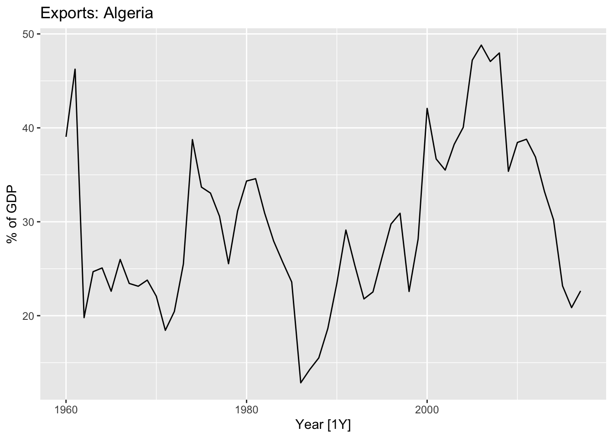
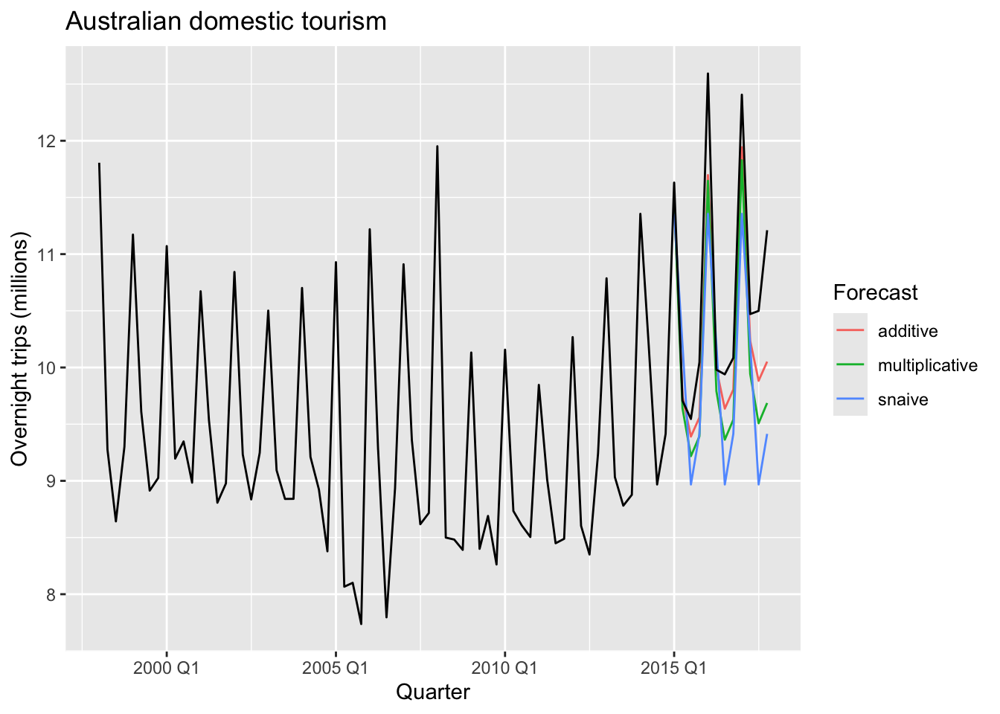

Chapter 8 Exponential Smoothing
# loading libraries
library(tsibble)
library(tsibbledata)
library(tidyverse)
# to read data
library(rio)
library(ggplot2)
library(fabletools)
library(feasts)
library(fpp3)
library(latex2exp)
library(forecast)
library(fma)8.1 Simple exponential smoothing
The SES method is suitable for forecasting data with no clear trend or seasonal pattern.
algeria_economy <- global_economy |>
filter(Country == 'Algeria')
algeria_economy |>
autoplot(Exports) +
labs(y = '% of GDP', title = 'Exports: Algeria')
Forecasts are calculated using weighted averages, where the weights decrease exponentially as observations come from further in the past — the smallest weights are associated with the oldest observations.
\[ \hat y_{T+1|T} = \alpha y_T + \alpha(1 - \alpha)y_{T-1} +\alpha(1 - \alpha)^2y_{T-1}+... \]
where \(0 \le \alpha \le 1\) is the smoothing parameter.
8.1.1 Weighted average form
\[ \hat y_{T+1|T} = \alpha y_T + (1-\alpha) \hat y_{T|T-1} \] where \(0 \le \alpha \le 1\) is the smoothing parameter.
\[ \hat y_{T+1|T} = \sum_{j=0}^{T-1} \alpha(1-\alpha)^j y_{T-j} + (a-\alpha)^T\ell_0 \]
The weighted average form leads to the same forecast equation of simple exponential smoothing.
8.1.2 Component form
Forecast:
\[ \hat y_{t+h|t} = \ell_t \] Smoothing:
\[ \ell_t = \alpha y_t + (1- \alpha)\ell_{t-1} \]
8.1.3 Flat forecast
\[ \hat y_{T+h|T} = \hat y_{T+1|T} = \ell_T, \space \space \space h = 2,3,... \] > That is, all forecasts take the same value, equal to the last level component. Remember that these forecasts will only be suitable if the time series has no trend or seasonal component.
8.1.4 Optimisation
The unknown parameters (\(\alpha\)) and the initial values (\(\ell_0\)) for any exponential smoothing method can be estimated by minimising the SSE.
\[ SSE = \sum_{t=1}^T(y_t - \hat y_{t|t-1})^2 = \sum_{t=1}^T e_t^2 \]
where \(e_t = y_t - \hat y_{t|t-1}\) for \(t=1,...,T\)
8.1.5 Example: Algerian exports
Fit the model ETS(ANN).
# Estimate parameters
fit <- algeria_economy |>
model(ETS(Exports ~ error("A") + trend("N") + season("N")))
fc <- fit |>
forecast(h = 5)Model report.
## Series: Exports
## Model: ETS(A,N,N)
## Smoothing parameters:
## alpha = 0.8399875
##
## Initial states:
## l[0]
## 39.539
##
## sigma^2: 35.6301
##
## AIC AICc BIC
## 446.7154 447.1599 452.8968The 5-step forecast.
## # A fable: 5 x 5 [1Y]
## # Key: Country, .model [1]
## Country .model Year Exports .mean
## <fct> <chr> <dbl> <dist> <dbl>
## 1 Algeria "ETS(Exports ~ error(\"A\") + trend(\"N\") + season(\"N\"))" 2018 N(22, 36) 22.4
## 2 Algeria "ETS(Exports ~ error(\"A\") + trend(\"N\") + season(\"N\"))" 2019 N(22, 61) 22.4
## 3 Algeria "ETS(Exports ~ error(\"A\") + trend(\"N\") + season(\"N\"))" 2020 N(22, 86) 22.4
## 4 Algeria "ETS(Exports ~ error(\"A\") + trend(\"N\") + season(\"N\"))" 2021 N(22, 111) 22.4
## 5 Algeria "ETS(Exports ~ error(\"A\") + trend(\"N\") + season(\"N\"))" 2022 N(22, 136) 22.48.2 Methods with trend
8.2.1 Holt’s linear trend method
Forecast: \[ \hat y_{t+h|t} = \ell_t + hb_t \]
Level: \[ \ell_t = \alpha y_t + (1-\alpha)(\ell_{t-1} + b_{t-1}) \]
Trend: \[ b_t = \beta(\ell_t - \ell_{t-1}) + (1-\beta)b_{t-1} \]
Parameters:
- \(\ell_t\) - the level fot he time series at time \(t\)
- \(b_t\) trend (slope) of the time series at time \(t\)
- \(\alpha\) - the smoothing parameter for the level \(0 \le \alpha \le 1\)
- \(\beta\) smoothing parameter for the trend \(0 \le \beta \le 1\)
8.2.1.1 Example: Australian population
aus_economy <- global_economy |>
filter(Code == "AUS") |>
mutate(Pop = Population / 1e6)
autoplot(aus_economy, Pop) +
labs(y = "Millions", title = "Australian population")## Plot variable not specified, automatically selected `y = GDP`There are trend and no seasonality in the time series, so use ETS(AAN) - Additive error, Additive trend and Non-seasonality.
Fit the model and forecast.
The smoothing parameters, \(\alpha\) and \(\beta\), and the initial values \(\ell_0\) and \(b_0\) are estimated by minimising the SSE for the one-step training errors.
# ETS(AAN) - Additive error, Additive trend and non-seasonality
aus_economy |>
model(AAN = ETS(Pop ~ error('A') + trend('A') + season('N'))) |>
forecast(h = 10) |>
autoplot(aus_economy) +
labs(y = "Millions", title = "Australian population forecast ETS(AAN)")
Note! The forecasts generated by EST(AAN) display a constant trend (increasing or decreasing) indefinitely into the future.
8.2.2 Damped trend methods
Forecast: \[ \hat y_{t+h|t} = \ell_t + \left( \sum_{t=1}^h {\phi}^h \right) \times hb_t \]
Level: \[ \ell_t = \alpha y_t + (1-\alpha)(\ell_{t-1} + \phi b_{t-1}) \]
Trend: \[ b_t = \beta(\ell_t - \ell_{t-1}) + (1-\beta)\phi b_{t-1} \]
Parameters:
- \(\ell_t\) - the level fot he time series at time \(t\)
- \(b_t\) trend (slope) of the time series at time \(t\)
- \(\alpha\) - the smoothing parameter for the level \(0 \le \alpha \le 1\)
- \(\beta\) smoothing parameter for the trend \(0 \le \beta \le 1\)
- \(\phi\) a damping parameters \(0 \le \phi \le 1\)
In practice, \(\phi\) is rarely less than 0.8 as the damping has a very strong effect for smaller values. Values of \(\phi\) close to 1 will mean that a damped model is not able to be distinguished from a non-damped model. For these reasons, we usually restrict \(\phi\) to a minimum of 0.8 and a maximum of 0.98.
8.2.2.1 Example: Australian population
There are increasing trend and no seasonality in the aus_economy time
series, so use ETS(AAdN) - Additive error, Additive damped
trend and Non-seasonality.
Fit the model and forecast.
# ETS(AAdN) - Additive error, Additive damped trend and non-seasonality
aus_economy |>
model(AAN = ETS(Pop ~ error('A') + trend('A') + season('N')),
AAdN = ETS(Pop ~ error('A') + trend('Ad', phi = 0.9) + season('N'))) |>
forecast(h = 15) |>
autoplot(aus_economy, level=NULL) +
labs(y = "Millions", title = "Australian population forecast ETS(AAdN)")The more \(phi\) is, the mode damping effect.
8.2.2.2 Example: Internet usage
www_usage <- as_tsibble(WWWusage)
www_usage |> autoplot(value) +
labs(x="Minute", y="Number of users",
title = "Internet usage per minute")8.2.2.2.1 Cross-validation
www_usage |>
stretch_tsibble(.init = 10) |>
model(
SES = ETS(value ~ error("A") + trend("N") + season("N")), # ETS(ANN)
Holt = ETS(value ~ error("A") + trend("A") + season("N")), # ETS(AAN)
Damped = ETS(value ~ error("A") + trend("Ad") + season("N"))) |> # ETS(AAdN)
forecast(h = 1) |>
accuracy(www_usage) |>
select(.model, MAE, RMSE, MAPE, MASE)## Warning: The future dataset is incomplete, incomplete out-of-sample data will be treated as missing.
## 1 observation is missing at 101## # A tibble: 3 × 5
## .model MAE RMSE MAPE MASE
## <chr> <dbl> <dbl> <dbl> <dbl>
## 1 Damped 3.00 3.69 2.26 0.663
## 2 Holt 3.17 3.87 2.38 0.701
## 3 SES 4.81 6.05 3.55 1.06The damped model ETS(AAdN) is more preferable.
## Series: value
## Model: ETS(A,Ad,N)
## Smoothing parameters:
## alpha = 0.9999
## beta = 0.9966439
## phi = 0.814958
##
## Initial states:
## l[0] b[0]
## 90.35177 -0.01728234
##
## sigma^2: 12.2244
##
## AIC AICc BIC
## 717.7310 718.6342 733.3620## # A tibble: 5 × 3
## .model term estimate
## <chr> <chr> <dbl>
## 1 Damped alpha 1.00
## 2 Damped beta 0.997
## 3 Damped phi 0.815
## 4 Damped l[0] 90.4
## 5 Damped b[0] -0.0173Make forecasts.
8.3 Methods with seasonality
8.3.1 Holt-Winters’ additive method
Forecast: \[ \hat y_{t+h|t} = \ell_t + hb_t + s_{t + h - m(k-1)} \]
Level: \[ \ell_t = \alpha (y_t - s_{t-m}) + (1-\alpha)(\ell_{t-1} + b_{t-1}) \]
Trend: \[ b_t = \beta(\ell_t - \ell_{t-1}) + (1-\beta)\phi b_{t-1} \]
Season: \[ s_t = \gamma(y_t - \ell_{t-1} - b_{t-1}) + (1-\gamma)s_{t-m} \]
where \(k = (h-1)/m\)
8.3.2 Holt-Winters’ multiplicative method
Forecast:
\[ \hat y_{t+h|t} = (\ell_t + hb_t) \times s_{t + h - m(k+1)} \]
Level:
\[ \ell_t = \alpha \frac {y_t} {s_{t-m}} + (1-\alpha)(\ell_{t-1} + b_{t-1}) \]
Trend:
\[ b_t = \beta(\ell_t - \ell_{t-1}) + (1-\beta) b_{t-1} \]
Season:
\[ s_t = \gamma \frac {y_t} {(\ell_{t-1} + b_{t-1})} + (1-\gamma)s_{t-m} \]
8.3.3 Example: Domestic overnight trips in Australia
aus_holidays <- tourism |>
filter(Purpose == 'Holiday') |>
summarise(Trips = sum(Trips)/1e3)
train <- aus_holidays |>
filter(year(Quarter) < 2015)
#fit the model
fit <- train |>
model(
snaive = SNAIVE(Trips), # Seasonal NAIVE
additive = ETS(Trips ~ error('A') + trend('A') + season('A')), # EST(AAA)
multiplicative = ETS(Trips ~ error('M') + trend('A') + season('M')) # ETS(MAM)
)
# make forecats
fc <- fit |> forecast(h = '3 years')
# plot the forecasts
fc |>
autoplot(aus_holidays, level = NULL) +
labs(title="Australian domestic tourism",
y="Overnight trips (millions)") +
guides(colour = guide_legend(title = "Forecast"))
## # A tibble: 3 × 10
## .model .type ME RMSE MAE MPE MAPE MASE RMSSE ACF1
## <chr> <chr> <dbl> <dbl> <dbl> <dbl> <dbl> <dbl> <dbl> <dbl>
## 1 additive Test 0.394 0.521 0.402 3.56 3.63 1.01 0.981 0.129
## 2 multiplicative Test 0.591 0.710 0.591 5.45 5.45 1.48 1.34 0.312
## 3 snaive Test 0.692 0.948 0.811 6.28 7.49 2.03 1.78 0.0518## Series: Trips
## Model: ETS(A,A,A)
## Smoothing parameters:
## alpha = 0.2561579
## beta = 0.02543275
## gamma = 0.0001002324
##
## Initial states:
## l[0] b[0] s[0] s[-1] s[-2] s[-3]
## 9.875393 -0.01230462 -0.568823 -0.6761713 -0.2620541 1.507048
##
## sigma^2: 0.2046
##
## AIC AICc BIC
## 188.5096 191.6131 208.4852## Series: Trips
## Model: ETS(M,A,M)
## Smoothing parameters:
## alpha = 0.2466059
## beta = 0.01562941
## gamma = 0.0001000005
##
## Initial states:
## l[0] b[0] s[0] s[-1] s[-2] s[-3]
## 9.886961 -0.02459763 0.9401183 0.9262804 0.9724422 1.161159
##
## sigma^2: 0.0023
##
## AIC AICc BIC
## 186.2399 189.3434 206.21558.3.4 Holt-Winters’ damped method
Using the Holt-Winters method for daily data, where seasonal period is \(m=7\).
sth_cross_ped <- pedestrian |>
filter(Date >= '2016-07-01', Sensor == 'Southern Cross Station') |>
index_by(Date) |>
summarise(Count = sum(Count)/1000)
sth_cross_ped |>
filter(Date <= '2016-07-31') |>
model(
hw = ETS(Count ~ error('M') + trend('Ad') + season('M'))
) |>
forecast(h = '2 weeks') |>
autoplot(sth_cross_ped |> filter(Date <= "2016-08-14")) +
labs(title = "Daily traffic: Southern Cross",
y="Pedestrians ('000)")8.4 A taxonomy of exponential smoothing methods
| Trend Component | Seasonal Component | ||
|---|---|---|---|
| N | A | M | |
| (None) | (Additive) | (Multiplicative) | |
| N (None) | (N, N) | (N, A) | (N, M) |
| A (Additive) | (A, N) | (A, A) | (A, M) |
| \(A_d\) (Additive damped) | (\(A_d\), N) | (\(A_d\), A) | (\(A_d\), M) |
| Short hand | Method |
|---|---|
| (N,N) | Simple exponential smoothing |
| (A,N) | Holt’s linear method |
| (\(A_d\),N) | Additive damped trend method |
| (A,A) | Additive Holt-Winters’ method |
| (A,M) | Multiplicative Holt-Winters’ method |
| (\(A_d\),M) | Holt-Winters’ damped method |
8.5 Innovations state space models for exponential smoothing
ETS : Error, Trend, Seasonal
- Error: {A, M}
- Trend: {N, A, \(A_d\)}
- Seasonal: {N, A, M}

8.6 Estimation and model selection
8.6.1 Model selection
The AIC, \(AIC_c\) and BIC can be used to determine which of the ETS models is most appropriate for a given time series.
Akaike’s Information Criterion (AIC)
\[ AIC = - 2 log(L) + 2k \]
where \(L\) is the likelihood of the model and \(k\) is the total number of parameters and initial states that have been estimated.
The AIC corrected for small sample bias (\(BIC_c\))
\[ AIC_c = AIC + \frac {2k(k+1)}{T-k-1} \] Bayesian Information Criterion (BIC)
\[ BIC = AIC + k[log(T) - 2] \]
8.6.2 Example: Domestic holiday tourist visitor nights in Australia
aus_holidays <- tourism |>
filter(Purpose == 'Holiday') |>
summarise(Trips = sum(Trips)/1e3)
fit <- aus_holidays |>
model(ETS(Trips))
report(fit)## Series: Trips
## Model: ETS(M,N,A)
## Smoothing parameters:
## alpha = 0.3484054
## gamma = 0.0001000018
##
## Initial states:
## l[0] s[0] s[-1] s[-2] s[-3]
## 9.727072 -0.5376106 -0.6884343 -0.2933663 1.519411
##
## sigma^2: 0.0022
##
## AIC AICc BIC
## 226.2289 227.7845 242.9031## Warning: Removed 4 rows containing missing values or values outside the scale range (`geom_line()`).
8.7 Forecasting with ETS models

8.8 Excercises
# Simple Exp Smoothing is ETS(ANN)
pigs <- aus_livestock |>
filter(Animal == 'Pigs', State == 'Victoria')
pigs |>
autoplot(Count) +
labs(title = 'Pigs slaughtered in Victoria')# a. ETS(ANN) - no trend, no seasonality
fit <- pigs |>
model(ETS(Count ~ error('A') + trend('N') + season('N')))
fit |>
report()## Series: Count
## Model: ETS(A,N,N)
## Smoothing parameters:
## alpha = 0.3221247
##
## Initial states:
## l[0]
## 100646.6
##
## sigma^2: 87480760
##
## AIC AICc BIC
## 13737.10 13737.14 13750.07## # A fable: 4 x 6 [1M]
## # Key: Animal, State, .model [1]
## Animal State .model Month Count .mean
## <fct> <fct> <chr> <mth> <dist> <dbl>
## 1 Pigs Victoria "ETS(Count ~ error(\"A\") + trend(\"N\") + season(\"N\"))" 2019 Jan N(95187, 8.7e+07) 95187.
## 2 Pigs Victoria "ETS(Count ~ error(\"A\") + trend(\"N\") + season(\"N\"))" 2019 Feb N(95187, 9.7e+07) 95187.
## 3 Pigs Victoria "ETS(Count ~ error(\"A\") + trend(\"N\") + season(\"N\"))" 2019 Mar N(95187, 1.1e+08) 95187.
## 4 Pigs Victoria "ETS(Count ~ error(\"A\") + trend(\"N\") + season(\"N\"))" 2019 Apr N(95187, 1.1e+08) 95187.aug <- fit |> augment()
# b
print(paste('PI(1) low: ', round(fc$.mean[1] - 1.96*sd(aug$.resid), 2)))## [1] "PI(1) low: 76871.01"## [1] "PI(1) hi: 113502.1"## # A tsibble: 1 x 2 [1M]
## `95%` Month
## <hilo> <mth>
## 1 [76854.79, 113518.3]95 2019 Jansimple_exp_smoothing <- function(y_ts, alpha, level){
y <- numeric(1)
l <- numeric(1)
f <- numeric(1)
y[1] <- NA
l[1] <- level
f[1] <- NA
for (i in 1:(length(y_ts)+1)) {
y[i+1] <- y_ts[i]
l[i+1] <- alpha * y[i+1]+(1-alpha)*l[i]
f[i+1] <- l[i]
}
return(f[length(f)])
}
a <- 0.3221247
l0 <- 100646.6
print(paste('SES manual one-step forecast: ', simple_exp_smoothing(pigs$Count, a, l0)))## [1] "SES manual one-step forecast: 95186.5574351184"## [1] "ETS(ANN) one-step forecast: 95186.5574309915"simple_exp_smoothing <- function(y_ts, params){
y <- numeric(1)
l <- numeric(1)
f <- numeric(1)
e <- numeric(1)
alpha <- params[1]
level <- params[2]
y[1] <- NA
l[1] <- level
f[1] <- NA
e[1] <- NA
for (i in 1:(length(y_ts))) {
y[i+1] <- y_ts[i]
l[i+1] <- alpha * y[i+1]+(1-alpha)*l[i]
f[i+1] <- l[i]
e[i+1] <- y[i+1] - f[i+1]
}
sse <- sum(e^2, na.rm = T)
return(sse)
}
result <- optim(par=c(alpha = 0, level=0), fn = simple_exp_smoothing, y_ts = pigs$Count, method = "L-BFGS-B", lower = c(0, min(pigs$Count)), upper = c(1, max(pigs$Count)))
print(paste0('Optimal alpha: ', result$par[1]))## [1] "Optimal alpha: 0.321994872263985"## [1] "Optimal level: 100533.064675812"## [1] "SSE: 48639277164.8261"## # A tibble: 2 × 2
## term estimate
## <chr> <dbl>
## 1 alpha 0.322
## 2 l[0] 100647.# Simple Exponential Smoothing
simple_exp_smoothing <- function(data, alpha, level, h = 0){
y <- numeric(1)
l <- numeric(1)
f <- numeric(1)
y[1] <- NA
l[1] <- level
f[1] <- NA
for (i in 1:(length(data) + h)) {
y[i+1] <- data[i]
l[i+1] <- alpha * y[i+1]+(1-alpha)*l[i]
f[i+1] <- l[i]
}
if(h == 0)
return(f[2:length(f)])
return(f[length(f)])
}
# Sum of squared errors
sse <- function(data, params){
e <- numeric(1)
alpha <- params[1]
level <- params[2]
e[1] <- NA
f <- simple_exp_smoothing(data, alpha, level)
sse <- sum((data - f)^2, na.rm = T)
return(sse)
}
# Find optimal params
optimal_params <- function(data){
result <- optim(par=c(alpha = 0, level=0),
fn = sse,
data = data,
method = "L-BFGS-B",
lower = c(0, min(data)),
upper = c(1, max(data)))
return(result)
}
# SES Forecast
SES_onestep_forecast <- function(data){
result <- optimal_params(data)
alpha = result$par[1]
level = result$par[2]
fc <- simple_exp_smoothing(data, alpha, level, h=1)
return(list(alpha = alpha,
level = level,
sse = result$value,
`one-step forecast` = fc
))
}
# Test
SES_onestep_forecast(pigs$Count)## $alpha
## alpha
## 0.3219949
##
## $level
## level
## 100533.1
##
## $sse
## [1] 48639277165
##
## $`one-step forecast`
## [1] 95186.74# a.
nl <- global_economy |>
filter(Country == 'Netherlands')
nl |>
autoplot(Exports) +
labs(title='The Netherlands exports', y = '% of GDP')# b. ETS(ANN)
nl |>
model(ETS(Exports ~ error('A') + trend('N') + season('N'))) |>
forecast() |>
autoplot(nl |> filter(Year > 2010))# c
nl |>
model(ETS(Exports ~ error('A') + trend('N') + season('N'))) |>
forecast(nl) |>
accuracy(nl) |>
select(RMSE)## # A tibble: 1 × 1
## RMSE
## <dbl>
## 1 31.7# d. ETS(ANN)
nl |>
model(
ANN = ETS(Exports ~ error('A') + trend('N') + season('N')),
AAN = ETS(Exports ~ error('A') + trend('A') + season('N'))) |>
forecast() |>
autoplot(nl |> filter(Year > 2010), level = NULL)nl |>
model(
ANN = ETS(Exports ~ error('A') + trend('N') + season('N')),
AAN = ETS(Exports ~ error('A') + trend('A') + season('N'))) |>
forecast(nl) |>
accuracy(nl) |>
select(.model, RMSE)## # A tibble: 2 × 2
## .model RMSE
## <chr> <dbl>
## 1 AAN 49.6
## 2 ANN 31.7china <- global_economy |>
filter(Country == 'China')
china |>
autoplot(GDP) +
labs(title = 'Chinese GDP')
fc <- china |>
model(
ANN = ETS(GDP ~ error('A') + trend('N') + season('N')),
AAN = ETS(GDP ~ error('A') + trend('A') + season('N')),
AAdN = ETS(GDP ~ error('A') + trend('Ad') + season('N'))
) |>
forecast(h = '40 years')# unstable seasonal variance and reminder variance => multiplicative seasonality is necessary
fc <- aus_production |>
model(
MAM = ETS(Gas ~ error('M') + trend('A') + season('M')),
MAdM = ETS(Gas ~ error('M') + trend('Ad') + season('M'))
) |>
forecast(h = '5 years')
fc |>
autoplot(aus_production |> filter(year(Quarter) > 2005), level = NULL)aus_production |>
model(
MAM = ETS(Gas ~ error('M') + trend('A') + season('M')),
MAdM = ETS(Gas ~ error('M') + trend('Ad') + season('M'))
) |>
forecast(aus_production, h = '5 years') |>
accuracy(aus_production)## Warning: Input forecast horizon `h` will be ignored as `new_data` has been provided.## # A tibble: 2 × 10
## .model .type ME RMSE MAE MPE MAPE MASE RMSSE ACF1
## <chr> <chr> <dbl> <dbl> <dbl> <dbl> <dbl> <dbl> <dbl> <dbl>
## 1 MAM Test -243. 248. 243. -1116. 1116. NaN NaN 0.0567
## 2 MAdM Test -167. 181. 167. -1027. 1027. NaN NaN 0.678